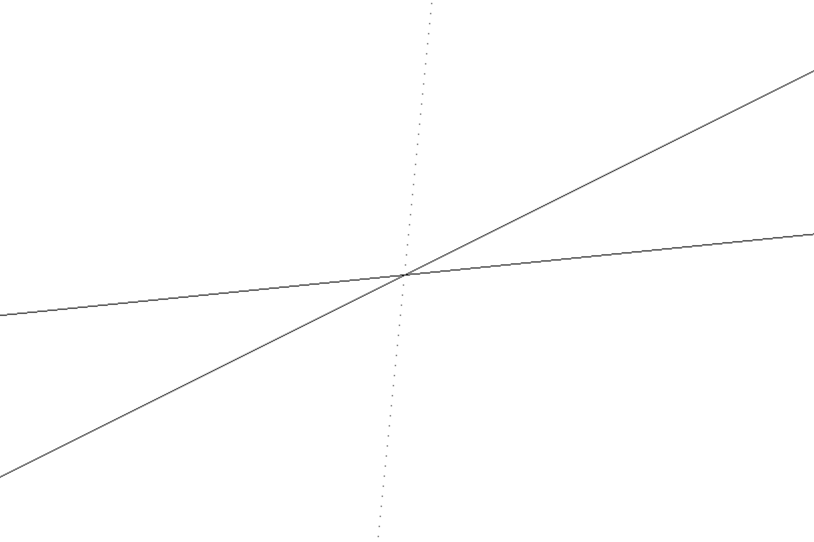
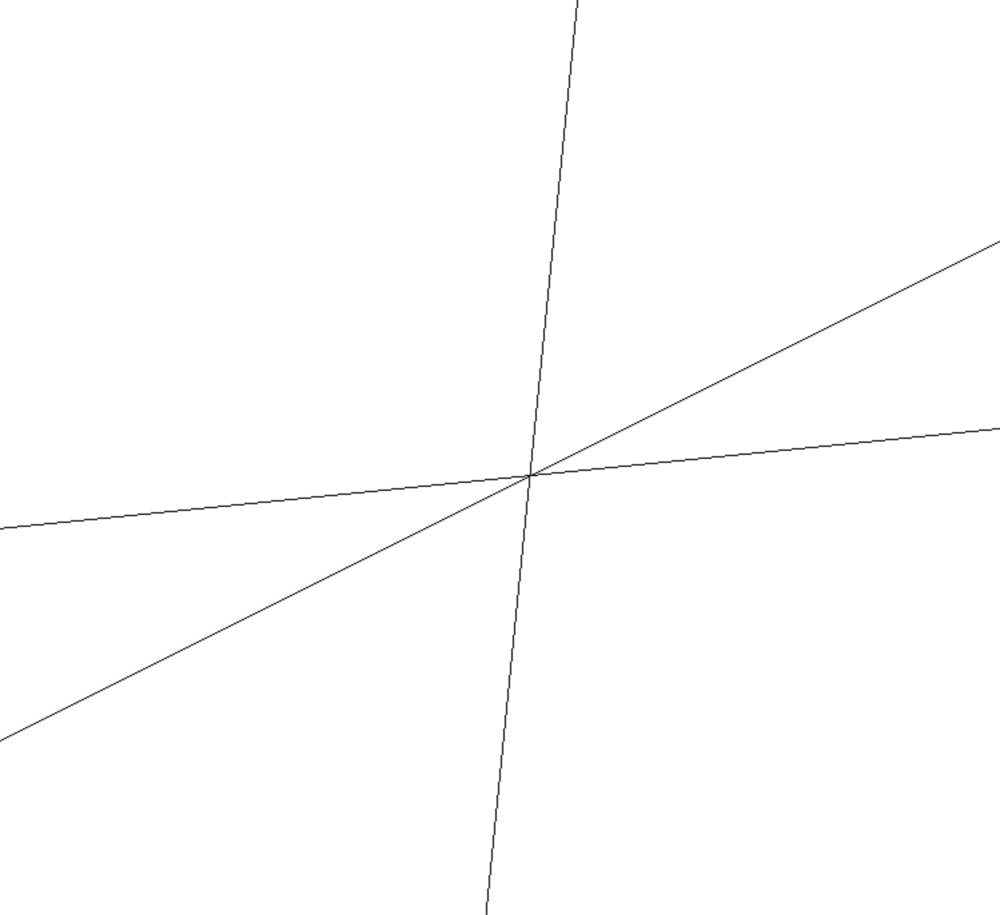
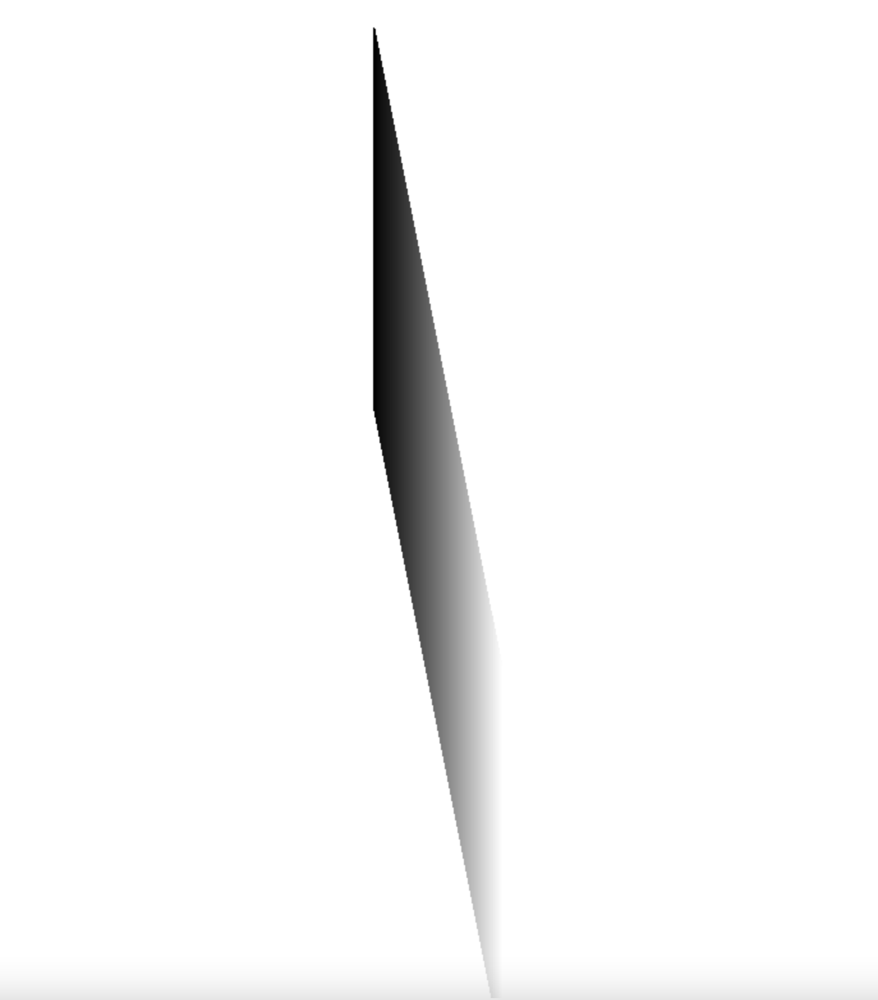

光线追踪器很美，但光栅器更加实用，学习光栅器对学习游戏引擎以及透视（对于透视，光线追踪只能给我们一些偏向感性的东西，如近大远小，不同焦距，相机角度的影响等，但光栅器能够给我们更理性的一些概念，规律，公式等，让我们不仅能感觉，而且能证明一些东西……应该吧？）都是有很大意义的，该继续学习了。
如果说光线追踪器就是对屏幕上的每一个像素，询问这个像素应该是什么颜色，那么光栅器就是对要场景中的每一个对象，问它要展示在画布的哪个部分 。
下面简单封装一下对画布的操作，后续均在此基础上进行抽象。
1 2 3 4 5 6 7 8 9 10 11 12 13 14 15 16 17 18 19 20 21 22 23 24 25 26 27 28 29 30 31 32 33 34 35 36 37 38 39 40 41 42 43 44 45 46 47 48 49 50 51 52 53 54 55 56 57 58 59 60 61 62 63 64 type Pen = {putPixel (x : number , y : number , color?: [number , number , number ]): void class Canvas {private readonly canvas : HTMLCanvasElement constructor (elem: HTMLElement ) {if (elem instanceof HTMLCanvasElement ) {this .canvas = elemelse {this .canvas = document .createElement ('canvas' )appendChild (this .canvas )get width ():number {return this .canvas .width set width (n: number ) {this .canvas .width = nget height ():number {return this .canvas .height set height (n: number ) {this .canvas .height = nforEachPixel (fn : (x: number , y: number ) => void ): void {const halfW = Math .floor (this .width / 2 )const halfH = Math .floor (this .height / 2 )for (let x = -halfW; x < halfW; x++) {for (let y = -halfH; y < halfH; y++) {fn (x, y)draw (body : (pen: Pen ) => void ): void {const canvas = this .canvas const canvasContext = canvas.getContext ("2d" )!;const canvasBuffer = canvasContext.getImageData (0 , 0 , canvas.width , canvas.height )const canvasPitch = canvasBuffer.width * 4 ;const pen : Pen = {putPixel (x, y, color = [0 , 0 , 0 ] ) {Math .floor (canvas.width /2 + x);Math .floor (canvas.height /2 - y - 1 );if (x < 0 || x >= canvas.width || y < 0 || y >= canvas.height ) {return ;let offset = 4 *x + canvasPitch*y;data [offset++] = color[0 ];data [offset++] = color[1 ];data [offset++] = color[2 ];data [offset++] = 255 ; body (pen)putImageData (canvasBuffer, 0 , 0 )
画直线 在编写光线追踪器的时候，处理的原子是画布上的像素，因此只需要 putPixel 这一个操作即可，但光栅器则需要将对象映射到 viewport 上，这要求提供一些更复杂的绘制操作，第一个要实现的是直线。
首先需要表示直线，最常见的直线表示法有y = kx + b，ax + by + c = 0等。如果我们使用y = kx + b表示直线，则可能会写出这样的绘制直线的方法（先不考虑垂直线情况）：
function putLine (this : Pen, p0: [number , number ], p1: [number , number ], color: [number , number , number ]if (p0[0 ] > p0[0 ]) [p0, p1] = [p1, p0]const [x0, y0] = p0const [x1, y1] = p1const k = (y1 - y0) / (x1 - x0)for (let x = x0, y = y0; x <= x1; x++, y += k) {this .putPixel (x, y, color)
看着很美好，下面绘制了y = 0.1x + 10，y = 0.5x + 10和y = 10x + 10，看看效果：

k = 0.5的时候，效果看起来还不错，但k = 10的时候，线看上去就不连续了。问题是很明显的——画布的像素是离散的，这里在每个 x 下仅绘制一个像素，当直线偏向 y 轴（k 大于 1 或小于-1）的时候，x 每增加 1，y 增加会大于 1，这就导致中间会出现空隙。有两个简单的处理方式：x 不递增 1，而是递增一个更小的数，这能够增加点的密度；去递增 y 而非递增 x。这里使用后者。
这里定义一个所谓的线性插值函数，它无所谓 x，y，只关心一个因变量 i 和一个自变量 d （仍旧是一个一次函数），它的逻辑仍旧和 drawLine 一致，但返回所有坐标。该插值函数要求 i 为整数，d 为实数。
function interpolate (p0: [number , number ], p1: [number , number ] ): [number , number ][] {if (p0[0 ] > p0[0 ]) [p0, p1] = [p1, p0]const [i0, d0] = p0const [i1, d1] = p1if (i0 === i1) return [p0]const k = (d1 - d0) / (i1 - i0)const values : [number , number ][] = []for (let i = i0, d = d0; i <= i1; i++, d += k) {push ([i, d])return values
然后，在 drawLine 中我们只需要处理直线倾向情况即可：
function putLine (this : Pen, p0: [number , number ], p1: [number , number ], color: [number , number , number ]const [x0, y0] = p0const [x1, y1] = p1if (Math .abs (x1 - x0) > Math .abs (y1 - y0)) {interpolate ([x0, y0], [x1, y1]).forEach (([x, y] ) => {this .putPixel (x, y, color)else {interpolate ([y0, x0], [y1, x1]).forEach (([y, x] ) => {this .putPixel (x, y, color)

another approach 直线有另一种表示法，其使用一个点和一个方向向量来描述，比如有点 P0，P1，则直线为：
P = P0 + t (P1 - P0 )x0 , y0 ) + t (x1 - x0 , y1 - y0 )x0 + t (x1 - x0 ), y = y0 + t (y1 - y0 )
我们能得到 x 和 y 关于 t 的方程，能否使用 t 来作为自变量，x，y 作为因变量来进行插值？问题现在在于 t 如何取递增值最合适，显然该递增值需要让增长最快的那个方向每次增加 1，即t * maxD = 1，其中maxD = Math.max(x1 - x0, y1 - y0)，然后可以发现，这里的效果恐怕和上面的方法是一样的。
但是仍旧有不同——使用 t 当自变量时，我们无法保证 x 和 y 均是整数（因为浮点数误差，可能两个都会不是整数），这导致在某些情况下在绘制上可能会出错。
填充三角形 下一个需要的工具是填充三角形（为什么是三角形？因为三个点可以表示一个面，任何复杂多面体都是可以由无数个三角形组成的）。首先是绘制三角形的轮廓，这是容易的：
function putTriangleWireframe (p0, p1, p2, color = [0 , 0 , 0 ] ) {this .putLine (p0, p1, color)this .putLine (p1, p2, color)this .putLine (p2, p0, color)
如何填充三角形呢？可以把三角形想象成多个水平线段的组合 （就像排线！），对每一个 y，我们要找到该处的这条线段的 x 的起始值和终止值并划线即可。
为此，我们只需要使用插值函数（使用 x 作为自变量，因此 y 是实数）获取三条边上的每一个点，按照 x 去分组，并对每一个 x，找到对应的 y 并作线段即可。
drawFilledTriangle (p0, p1, p2, color = [0 , 0 , 0 ] ) {const allPoints : [number , number ][] = [...interpolate (p0, p1), ...interpolate (p1, p2), ...interpolate (p2, p0)]const x2Points = groupBy (allPoints, ([x, y] ) => x)Object .entries (x2Points).forEach (([x, ps] ) => {if (ps.length <= 1 ) return const ys = ps.map (([x, y] ) => y).sort ()const yBottom = ys[0 ]const yTop = ys[ys.length - 1 ]this .putLine ([+x, yBottom], [+x, yTop], color)
三角形着色 填充三角形实现完了，填充的本质实际上就是绘制无数个水平或垂直线段。现在来点更好玩的事情——给三角形着色（shading）。对三角形的每一个顶点，给定一个颜色值，并在填充时做出渐变的效果。
首先需要确定边上的特定点的颜色，考虑一条边 AB，点 A 的颜色为 a，点 b 的颜色为 b，对边上任意点 X，可以简单让这时的颜色x = a * |XB| / |AB| + b * |XA| / |AB|（还会有其它方法吧？），实现如下：
function getColor (a: Point, b: Point, c0: RGB, c1: RGB, x: Point ): RGB {if (t <= 0 ) return c0if (t >= 1 ) return c1const xbDist = Point .dist (x, b)const abDist = Point .dist (a, b)const xaDist = Point .dist (x, a)return c0.map ((_, i ) => c0[i] * xbDist / abDist + c1[i] * xaDist / abDist).map (x =>Math .floor (x)) as RGB
借助该方法，编写一个 putGradientLine 函数，该函数仅在 putLine 函数的基础上修改了获取像素颜色的部分，这个函数其实没有什么必要，因为我们只画竖直的渐变线段：
putGradientLine (p0, p1, c0, c1 ) {const [x0, y0] = p0const [x1, y1] = p1if (Math .abs (x1 - x0) > Math .abs (y1 - y0)) {interpolate ([x0, y0], [x1, y1]).forEach (([x, y] ) => {this .putPixel (x, y, getColor (p0, p1, c0, c1, [x, y]))else {interpolate ([y0, x0], [y1, x1]).forEach (([y, x] ) => {this .putPixel (x, y, getColor ([y0, x0], [y1, x1], c0, c1, [y, x]))
使用该方法，我们能绘制一下灰阶（从 000 到 fff），这里做一个极端的角度，品尝一下锯齿：
for (let y = 0 ; y < 300 ; y++) {putGradientLine ([0 , y], [100 , y - 500 ], [0 , 0 , 0 ], [255 , 255 , 255 ])

然后我们对每一个 x，找到它上面的点 yTop 和下面的点 yBottom 的颜色，绘制像素时同样使用该算法即可。代码为填充三角形的修改。
1 2 3 4 5 6 7 8 9 10 11 12 13 14 15 16 17 18 19 20 21 22 23 drawGradientTriangle (p0, p1, p2, c0, c1, c2 ) {const p01s = interpolate (p0, p1).map ((x ) => {const color = getColor (p0, p1, c0, c1, x)return [x, color] as [Point , RGB ]const p02s = interpolate (p0, p2).map ((x ) => {const color = getColor (p0, p2, c0, c2, x)return [x, color] as [Point , RGB ]const p12s = interpolate (p1, p2).map ((x ) => {const color = getColor (p1, p2, c1, c2, x)return [x, color] as [Point , RGB ]const x2Points = groupBy ([...p01s, ...p02s, ...p12s], ([[x, y]] ) => x)Object .entries (x2Points).forEach (([x, ps] ) => {if (ps.length <= 1 ) return const ys = ps.sort (([[,y0]], [[,y1]] ) => y0 - y1)const [[, yBottom], cBottom] = ys[0 ]const [[, yTop], cTop] = ys[ys.length - 1 ]this .putGradientLine ([+x, yBottom], [+x, yTop], cBottom, cTop)
pen.drawGradientTriangle ([-300 , 200 ], [10 , -300 ], [120 , 370 ], [255 , 0 , 0 ], [0 , 255 , 0 ], [0 , 0 , 255 ])